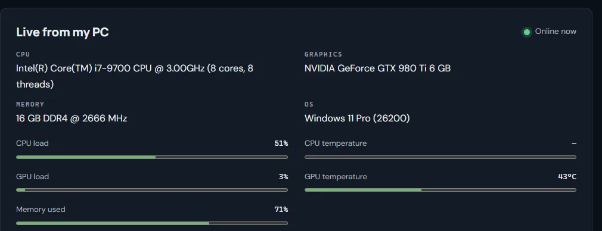
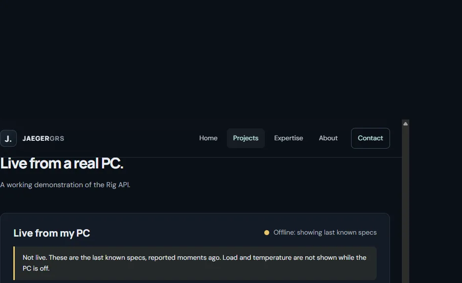

Project · Case study
Rig API.
A small Windows tray app reports a PC's hardware and load to an authenticated Cloudflare Worker, and a web panel shows it live. It is the code behind the live panel on this site, and it can also be bought.
- Type
- Windows app + Worker API + embed
- Agent size
- 25.5 KB (26,112 bytes)
- Agent memory, measured
- About 11 MB working set, 31 MB private, one PC, one sample
- Runs on
- Cloudflare Workers + Durable Objects
Why
The problem.
I wanted visitors to see the computer behind my projects as it really is, rather than a list of specifications I typed once and let go stale. A static page cannot know whether my PC is on, so the data has to be pushed from the PC, stored somewhere always available and read safely by a public page.
The constraints I set: a tiny background app, no inbound ports opened on my home network, no personal data leaving the PC, and a public page that stays honest when the PC is switched off.
Architecture
How data flows.
Checked against the source in agent/app/RigAgent.cs, src/worker.mjs and src/rig-hub.mjs.
The tray app
A native C# app (about 25 KB) that samples CPU and memory through Windows kernel calls, hardware names through WMI and NVIDIA GPU figures through nvidia-smi. It samples every 5 seconds when someone is watching the site and every 15 seconds when nobody is, and backs off after errors. AMD and Intel GPU load is not reported.
Pairing
While setup is switched on in Cloudflare, the app presses Get key from site and the Worker returns a random pairing key once. The app stores it with Windows DPAPI for the current user. The key is never shown on a web page. An owner can instead set a key as a Cloudflare secret.
Authenticated updates
Every update carries Authorization: Bearer <key>. The Worker hashes both sides and compares them in constant time, answers 401 on a mismatch and never accepts keys shorter than 32 characters.
Invalid data
Bodies over 8 KB get 413. Only whitelisted fields are kept, numbers are range-checked and text is cleaned and length-limited. If neither the specs nor the live figures survive, the Worker answers 422. Updates faster than one a second get 429.
If the PC is off
The Worker treats the PC as online only if the last update was under 25 seconds ago. After that it still returns the last known specs, flagged offline, and the panel hides load and temperature rather than showing old numbers as live.
The panel
This site's panel and the third-party embed both poll the public snapshot. Each shows loading, online, offline and unavailable states. Only the status line is announced to screen readers; the changing figures are not.
Live demonstration
Running now.
This is the real panel, reading the real Worker. If my PC is off you will see the last known specs, clearly marked.
Live from my PC
Checking…
Not live. These are the last known specs, reported earlier. Load and temperature are not shown while the PC is off.
My PC reports its specs and load here while it is switched on. When it is off you will see the last known specs, clearly marked.
- CPU
- —
- Graphics
- —
- Memory
- —
- OS
- —
How it works: a small Windows tray app on the PC sends hardware readings to a Cloudflare Worker, and this page polls the Worker every few seconds. Metrics are not announced to screen readers; only the status line is. Read the Rig API case study →


Security review
What the code actually does.
Reviewed from the implementation, not the marketing. A gap is a gap even when it is acceptable for a small personal site.
| Area | Implemented | Gaps and caveats |
|---|---|---|
| Pairing key | 36 bytes from crypto.getRandomValues, base64url (288 bits). Issued once to the agent, only while RIG_SETUP is on. | The claim endpoint has no rate limit. With open the first caller wins; if rotate is left on, anyone could replace the key. Turn setup off after pairing. |
| Secret storage | Agent: DPAPI (current user, with entropy) in %APPDATA%. Worker: a Cloudflare secret if RIG_TOKEN is set. | A site-generated key sits unhashed in Durable Object storage. Malware running as the same Windows user could use DPAPI to read the agent key. |
| Authentication | Bearer key of 32+ characters, hashed and compared in constant time. 401 with WWW-Authenticate. | One shared key, no per-device identity, and no lock-out after repeated failures. Brute force is impractical for generated keys, but a short owner-chosen RIG_TOKEN is only as strong as its owner. |
| Rate limiting | One accepted update per second, then 429. | Applied after authentication and shared globally. Not applied to the claim endpoint or to failed attempts. Reads are only protected by a 2 second edge cache. |
| Data validation | Field whitelist, numeric ranges, cleaned and length-limited strings, 8 KB cap, 422 on junk. | When a request has no Content-Length, the body is read before the size limit is applied. |
| State management | One Durable Object holds the latest snapshot and specs. | A single global instance for a single machine. No history is kept. |
| Error responses | Short JSON codes, no stack traces. | not_configured and already_claimed reveal whether a key has been set. |
| Cross-origin access | None by default. An optional RIG_EMBED_ORIGINS setting allows named sites (or *) to read the public GET snapshot. POST never gets CORS headers. | Found during this review: without it the embed was blocked by the browser on any other site. Fixed in this pass and tested. The snapshot is public, so listing origins controls who can read it from a browser, not who can read it at all. |
| Logging | The Rig code path logs no keys or request bodies. | Cloudflare observability is switched on for the Worker and records request metadata. I have not audited exactly what it retains. |
| Transport | HTTPS through Cloudflare with HSTS. The agent refuses plain http:// except for localhost. | No certificate pinning. |
| Replay and brute force | TLS protects a request in transit. A replayed request could only submit already-sanitised readings, within the rate limit. | No nonce or timestamp, so a stolen key stays valid until it is rotated. |
Automated checks for most of these controls are in scripts/test-worker.mjs (run by npm test). No penetration test or third-party audit has been carried out.
Limits
Current scale and limits.
- One machine to one site, through one global Durable Object.
- The agent is Windows only. GPU load, temperature, clock, power and fan come from
nvidia-smi, so only NVIDIA GPUs report them. - Published specs include CPU, GPU and driver, memory, board maker and model, operating system build and storage totals. No files, network details or personal data are sent.
- Tested with the Worker test script, a local agent dry run and the live site. Not load tested.
- Memory and CPU figures are a single measurement on one PC, not a benchmark.
Go deeper
More on the Rig API.
Get in touch
Questions about
the Rig API?
Ask about the design, the code or whether it suits your site.